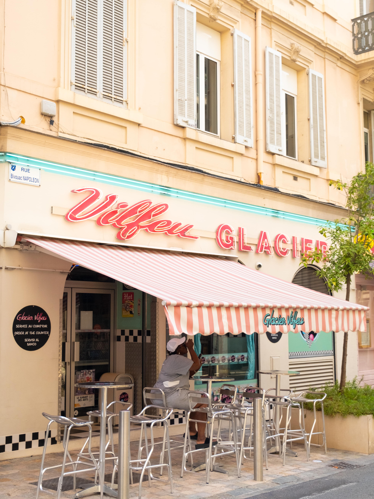

Fujifilm X-T4 Mirrorless Camera Review: features, Pros and Cons Explained

My journey towards buying a Fujifilm X-T4
During my first six months stay in South Africa, from late 2021 to early 2022, I came to know the full extend of my love for photography. It should be said that it is fairly easy to get into photography in this country, as there is so much natural beauty to capture. The mountain passages, the sea, the sunsets, the flowers, the markets, and the people offer endless inspiration. Being out here brought me back in touch with this natural interest to capture beauty, rather than that it was a newly developed interest. As I took photos with my Iphone and edited them, I realised that I actually loved this process beyond an amateur level. I wanted to be able to take even better photos, which would truly reflect the reality of the scenes I captured.
At this point I was also very inspired by film photography, and decided to invest in a beautiful second hand Pentax K1000 with a few lenses. I found this camera on a Dutch online market place while I was still in South Africa. My parents were so kind to receive it at their home. When I finally touched base again, I was incredibly happy to meet the iconic Pentax for the first time. I didn't want to wait any longer, and tried to find out which type of film I would try first. However, I soon discovered that the prices of film rolls had increased quite a bit due to production shortages. Something that I feared would make it more difficult to establish a more continuous workflow with film photography. In addition, it became clear at the time that I would return to South Africa, where it is harder to get a hold of film and get it developed. At least in Knysna, where my boyfriend and I would live.

For these reasons, I imagined that it would be great to also own a digital camera. One that I could always rely on, and that would be as good as the film camera. In fact, I did already own the Nikon D3100, and thought I could start using it again. Soon, however, I came to understand that this entry level camera was unfortunately too limiting for what I wanted to achieve at this point. After considering all options, I concluded that owning a professional camera would truly be an amazing asset to my life. This then marked the beginning of the journey to find out which camera would be right for me. After inquiring with an old classmate, a good bit of reading, and watching numerous Youtube videos, I bought the beautiful Fujifilm X-T4. I was very happy with it from the moment I started using it. Below, I will tell you about some of the Fujifilm X-T4's features that make this such a pleasant camera to me. Since I do not own other professional cameras, I cannot offer you a comparative review. Still, I hope it might offer you some helpful insights.
The Fujifilm X-T4's best features
For me, one of the Fujifilm X-T4's best features are its external dials. During the process of finding a camera, I read somewhere that you need to be able to work with it intuitively. While this might sound very logical, I realised that I needed to explore what would be truly intuitive to me. From practicing with the Nikon D3100, I knew that I found it harder to quickly adjust the settings when this had to be done through the menu. The combination of this and the fact that I was still approaching photography in a more playful way at the time, mostly made me use the automatic functions. However, my interest in the more technical side of photography had grown through the years. At the point that I decided to get the Pentax K1000, I was very eager to learn everything about a camera's ins and outs. Soon I discovered how nice is was to access the ISO, shutter speed and aparture directly through the external dials. This time, I felt that my need to learn and grow was met by the accessibility of the tools.

While looking at different digital cameras, I soon felt very drawn to the Fujifilm X series because of their vintage dials. Having enjoyed the Pentax K1000, I felt that the rigt way forward was to stay close to this mechanism. These dials also made me choose the Fujifilm X-T4 over other great cameras, like the Canon A7III, for example. Moreover, the Fujifilm X-T4 not only has ISO and shutter speed dials, but also dials for exposure compenstation, one to change from stills to film and vise versa, and one for different drive modes. Examples of the latter are panaroma, HDR and bracketing. Up to this day I'm very happy I can work with the camera this way. I feel a sense of play while discovering what the art of photography really entails. However, in case you are used to DSLR settings, you can almost mimic these on the FujiFIlm X-T4. This is done by adjusting certain settings. I believe this makes this Fujifilm very fitting to various needs.
Apart from enjoying the existence of the dials, I'm also in love with their feel and functionality. The dials both turn smoothly and clearly into a different mode. This way you can easily keep track of your settings, even without looking at the dials. Would you like to work with a fixed ISO or shutter speed? In that case you can press the button on top of the dials and they're nicely secured. While rotating the dials, you can feel that this camera's made with qualitative materials. In fact, the aspect of quality is something I think applies to the whole exterior of the Fujifilm X-T4. the camera's magnesium alloy body with leather wrap is very beautiful, making it just as enjoyable to look at the Fujifilm X-T4 itself as its photos. In addition, the body as well as its buttons and dials all feel very sturdy, while the camera itself is very lightweight.
Another aspect I praise is the fujifilm X-T4 menu. I am not sure whether this is a common feature in most modern, digital cameras, but the Fujifilm X-T4 offers the option to create a personal menu. You can select all options that you'd like to be able to access directly while taking photos. This selection will then be accessible through the menu button at the back of the camera. When it comes to the overall menu, I find that it is nicely organised. The different sections make sense. As a beginning photographer, there were some options of which I did not know the meaning yet. However, the way in which the options are grouped together, helped in getting to understand and use them accordingly.
Finally, this article cannot be written without discussing one of the most important features of any camera: photo quality and functionality. To begin with, the photo quality of the Fujifilm X-T4 is truly wonderful. It was amazing to use the camera for the first time, and be surprised by the beautiful shots it puts out. I find that the photos have a great smoothness to them, a nice light-dark contrast, and such beautiful depth. Besides these features, the way that the Fujifilm captures and processes colours is also fantastic. This must be the work of the special Fujifilm sensors, which increase the effective resolution and quality of colour filters. Personally, I never worked with a camera before of which the photos match the scene's real beauty. The Fujifilm X-t4's photos really do. The 26 megapixel has also been sufficient to me, even though I have at moments wished I could crop my images a bit more without losing quality. However, I also believe that this issue can be resolved by investing in a superzoom lens. This would mostly be nice for animal photography.
When it comes to its functionality, the fujifilm X-T4 is advertised for its in-body stabilization, improved autofocus, and faster shooting. For a while, I was truly enjoying the option to shoot photos with the fastest shutter speeds of up to 1/8000 and 1/4000s of a second in combination with the highest aperture, and ISO values of around 400 to 600. However, after using the camera for a while, I realised that these are not always the best settings. My landscape photos missed a certain sharpness I found, and therefore I am now experimenting more with a combination of slower shutter speeds, the lowest ISO values and higher apertures, like ten or eleven. I find that the camera actually does great work at all possible settings. In addition, the shutter is very silent and smooth. Something that I wouldn't have thought has real benefits, but it does. Making photos never feels invading to any situation. Whether that is a walk in quiet nature, or in any public place.
Does this camera have any downsides?
Two aspects that I would list as small downsides to the Fujifilm X-T4, are the position of the focus switch and its lower photo quality in darker settings. After working with the Fujifilm X-T4 for a while, I read online that the best way to make nightsky photos, is by using manual focus. It was in this moment that I remembered the camera's focus switch. So far, autofocus had been all that I had used. One of the reasons for this is that the Fujifilm X-T4's autofocus works fairly nicely. It's fast enough, and apart from it catching an ocashional tree as a face, it's great at catching the right focus point. The other reason is that I had completely forgotten about the autofocus switch. Now that I have rediscovered it and am using it more regularly, I realise that its position is rather impractical. You cannot reach it very well, and you can only see it when turning the camera around. A minor incovenience in some ocashions, a rather big one in others.
When it comes to taking photos in darker conditions, I have noticed that the photos are quite grainy. It's not the worst, neither the best. I have to say that I am not so much a night or evening photographer. It's not that the night doesn't interest me, but I prefer capturing day colours. What I do love capturing is a good sunset, and that's when I noticed the grain. I do not want to give the impression that the Fujifilm X-T4 is very bad in low light conditions. However, when you are someone who loves taking photos at night or in other darker conditions, like a low lit room, the Fujifilm X-T4's might not be the best choice for you. On Instagram, I follow photographers who love capturing the night, and have made that their central theme. I bet that they're probably using a different type of camera.
Something that others have mentioned is a downside to the Fujifilm X-T4, is its smaller grip. Personally, I have been working with a 16-55mm f2.8 R LM WR Mirrorless lens, which is quite heavy. Yet I haven't experienced any real discomfort. When I have to hold my hand in a certain position for longer it does get a bit heavier. Still, when this happens, I find that supporting the body with my other hand easily solves that issue. Would you use bigger lenses than this 16-55 mm one, however, I can imagine that it could get uncomfortable. I guess that to me, this is still just a minor downside to an otherwise fantastic camera.
The FujiFilm X-T4's key specialistations:

- 26MP BSI CMOS sensor
- In-body image stabilization (up to 6.5EV correction)
- 20 fps shooting with AF (15 with new mechanical shutter)
- 4K video (DCI or UHD) at up to 60p
- 1080 video at up to 240 fps, output as 4-10x slow-motion footage
- Fully articulated rear touchscreen
- 3.68M-dot OLED electronic viewfinder (up to 100 fps refresh rate)
- New NP-W235 battery rated to give 500 shots per charge
- Dual UHS-II card slots
- USB-C type connector allowing USB PD charging
- 12 Film Simulation modes, including Eterna Bleach Bypass
- A total weight of only 607 grams, including the battery.
For all Fujifilm X-T4's specifications, visit the fujifilm website. I hope that this review might have given you something to hold on to while trying to find the right camera for you. If you have any questions, feel free to message me on my Instagram or Email. You can find these below.